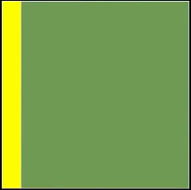
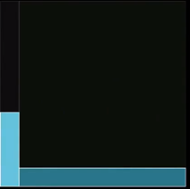
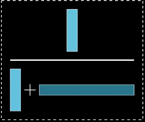

1. basis
1. 基本概念
条件概率: 额外信息缩小样本空间
$\displaystyle
P(A|B)=\frac{P(AB)}{P(B)}
$
全概率公式: 划分样本空间，进而划分事件
$\displaystyle
P(A)=\sum_{i=1}^n AB_i = \sum_{i=1}^n P(A|B_i)P(B_i)
$
似然 (likelihood) 和 概率 (probability) 在语义上相近；在统计学中，其区别在于，$P(X|\ \theta)$ 代表 $X$ 的概率、$\theta$ 的似然。
2. 贝叶斯公式
(1). 引子
Given that an evidence:
Steve is very shy and withdrawn, invariably helpful but with very little interest in people or in the world of reality. A meek and tidy soul, he has a need for order and structure, and a passion for detail.
Which of the following is more likely:
> Steve is a librarian
> Steve is a farmer
(Note: This is an example from a study conducted by the two psychologists - Daniel Kahneman and Amos Tversky. What they researched is when human judgements irrationaly contradict what the laws of probability suggest they should be.)
根据直觉，通过 Steve 的特点认为他更可能是一个图书管理员，但这样思考是 "非理性的"，没有考虑人群的比例信息。假设人群中 librarian : farmer = 1 : 20，根据贝叶斯公式，正确结果为:
$\displaystyle\small
\text{Hypothesis:\enspace Steve is a libriran.} \newline
\text{Evidence:\enspace descriptions given about Steve.}
$
$\displaystyle
P(H|E)=\frac{P(H)P(E|H)}{P(E)}=\frac{P(H)P(E|H)}{P(H)P(E|H)+P(\bar{H})P(E|\bar{H})}=\frac{1}{6}
$
$(2.1)$
在 式 $2.1$ 中:
- $P(H)$: 先验概率，i.e. 未获得新证据的情况下，根据以往经验和分析得到的概率
- $P(E|H)$: 似然概率
- $P(H|E)$: 后验概率
(2). 几何直观
由于概率就是比例，因此可以很自然地把样本空间投影到二维平面，辅助理解贝叶斯公式。
上述例子的过程可描述为:
All possibilities

$\Large\overset{1}{\longrightarrow}$
All possibilities fitting the evidence

$\Large\overset{2}{\longrightarrow}$
P (librarian | evidence)

$1$: 在先验概率划分的样本空间中，只看每部分中符合 $\text{evidence}$ 的部分
$2$: 然后在 $1$ 划分的样本空间中，考虑满足假设成立的那部分
(3). 结论
贝叶斯定理的一个主要思想是，新证据不能凭空决定你的看法，而是应该更新你的 (先验) 看法:
$\displaystyle
P(H|E)=P(H)\times\frac{P(E|H)}{P(E)}\enspace \Longrightarrow \enspace \text{Posterior}=\text{Prior} \times \text{Adjustment}
$
贝叶斯公式是否违背人的直觉是心理学问题，而在其他场景，更应注重的是通过它修正直觉。
3. MLE vs. MAP
设 $X=(x_1,x_2,...,x_n)$ 是对数据独立同分布的一组抽样，$\theta$ 是概率模型的参数。MLE 和 MAP (max a posterior) 的思路如下。
(1). 极大似然估计
MLE 是频率派的方法，$\theta$ 是存在且唯一的。以抛硬币为例，硬币一定客观存在一个 $P(\text{head})=\theta$. MLE 通过最大化似然函数，使当前观测到的数据最有可能发生:
$
\begin{aligned}\displaystyle
\hat{\theta}_{\text{MLE}}
&= \argmax P(X ; \theta) \\
&= \argmax P(x_1 ; \theta) P(x_2 ; \theta) \ ...\ P(x_n ; \theta) \\
&= \argmax \log \prod_{i=1}^n P(x_i ; \theta) = \argmax \sum_{i=1}^n \log P(x_i ; \theta) \\
&= \argmin - \sum_{i=1}^n \log P(x_i ; \theta)
\end{aligned}
$
(2). 最大后验估计
MAP 是贝叶斯派的方法，$\theta$ 是符合某个先验分布的随机变量，MAP 依赖于贝叶斯公式:
$\displaystyle
P(\theta | X) = P(\theta) \cdot \frac { P (X | \theta) } { P(X) }
$
以抛硬币为例，在未获得数据前，我们认为它大概率是正常的，可以假设 $\theta$ 的先验分布为 $P(\theta)=\theta (1 - \theta)$，然后通过数据 $X$ 更新先验知识得到 $P(\theta | X)$
$
\begin{aligned}\displaystyle
\hat{\theta}_{\text{MAP}}
&= \argmax P(\theta | X) \\
&= \argmax \log P(X | \theta) + \log P(\theta) - \log P(X) \\
&= \argmax \log P(X | \theta) + \log P(\theta)
\end{aligned}
$
如果 $X$ 由大量正面数据组成，那么 $P(\theta | X)$ 就会变成一个最大值和分布都十分靠近 $1.0$ 的函数
- 如果先验知识认为 $\theta$ 是均匀分布 (i.e. 无信息先验，对 $\theta$ 的估计完全依赖数据)，此时 MAP 和 MLE 等价
- 随着数据增加，先验的作用越弱，数据的作用越强，参数分布趋于 MLE。(可以证明，MAP 是 MLE 和先验的凸组合)